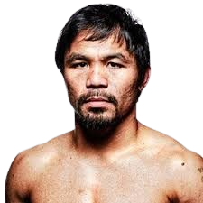

| MANNY PACQUIAO | SHORT INTRODUCTION | LIFESTORY |
|---|---|---|
|  |
Manny Pacquiao (born December 17, 1978, Kibawe, Bukidnon province, Mindanao, Philippines) professional boxer, media celebrity, and politician who became world-famous for winning boxing titles in more weight classes than any other boxer in history. His rise from abject poverty to the pinnacle of his sport was made even more remarkable by his life outside the ring. The charismatic “Pac-Man” was an idol and a unifying force in the Philippines, where his unprecedented popularity led to commercial endorsements, movies, television shows, CDs, and his image on a postage stamp. | Pacquiao left home as a teenager and stowed away on a ship bound for Manila, where he became a boxer. He made his professional debut as a junior flyweight on January 22, 1995, at the age of 16. Many of his early bouts were televised on a program called Blow by Blow, where his all-action style and boyish smile quickly made him a favourite with Filipino boxing fans. He won his first major title on December 4, 1998, knocking out Thailand’s Chatchai Sasakul to capture the World Boxing Council (WBC) flyweight title. After failing to make weight, however, he lost the title to Medgoen Singsurat of Thailand in September 1999. Pacquiao moved up in weight class, and on June 23, 2001, in his first fight in the United States, he scored a sixth-round knockout of Lehlo Ledwaba to win the International Boxing Federation (IBF) junior featherweight title. Following four successful defenses, he knocked out Mexico’s Marco Antonio Barrera on November 15, 2003, to become The Ring magazine featherweight champion. Over the next several years, Pacquiao engaged in a series of high-profile fights, winning the World Boxing Association (WBA) and IBF featherweight titles, the WBC and The Ring’s junior lightweight titles, and the WBC lightweight title. His rise was aided by American trainer Freddie Roach, who gradually transformed the left-handed slugger into a multifaceted boxer without detracting from his natural aggression or punching power. He was the Boxing Writers Association of America and The Ring’s Fighter of the Year in 2006 and 2008. |